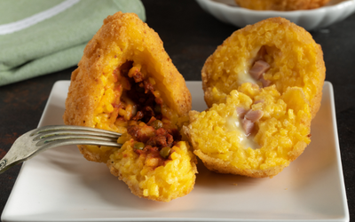

Gastronomic Adventures Recipes
Porchetta
A savory, moist, and fatty pork roast, typically seasoned with garlic, rosemary, fennel, and other herbs and spices, then slow-roasted until tender and crispy on the outside.
Ingredients:
- Pork belly
- Pork loin
- Garlic
- Rosemary
- Fennel seeds
- Salt
- Black pepper
Instructions:
1. Score the skin of the pork belly in a diamond pattern and rub it with salt.
2. Crush garlic, rosemary, and fennel seeds together to make a paste.
3. Rub the garlic, rosemary, and fennel paste over the scored skin of the pork belly and pork loin.
4. Season the meat generously with salt and black pepper.
5. Roll the pork loin into the pork belly and tie it securely with kitchen twine.
6. Preheat the oven to a high temperature.
7. Place the porchetta on a rack in a roasting pan and roast it in the preheated oven until the skin is crispy and the internal temperature reaches 145°F (63°C).
8. Let the porchetta rest for 15-20 minutes before slicing and serving.
Zuppa di Pesce
A hearty Italian fish soup made with a variety of seafood such as fish fillets, shrimp, clams, and mussels, cooked in a rich tomato-based broth flavored with garlic, onions, herbs, and white wine.
Ingredients:
- Assorted fish fillets
- Shrimp
- Clams
- Mussels
- Tomatoes
- Garlic
- Onion
- White wine
- Fish stock
- Fresh herbs (such as parsley, basil, and thyme)
- Red pepper flakes
- Salt
- Black pepper
Instructions:
1. In a large pot, heat olive oil over medium heat and sauté chopped onions and garlic until softened.
2. Add chopped tomatoes, fish stock, white wine, and red pepper flakes to the pot.
3. Bring the broth to a simmer and let it cook for about 15-20 minutes to allow the flavors to meld.
4. Season the broth with salt and black pepper to taste.
5. Add the assorted seafood to the pot and cook until the fish is opaque and the shellfish have opened.
6. Stir in fresh herbs and adjust seasoning if necessary.
7. Serve the zuppa di pesce hot, garnished with additional fresh herbs and crusty bread.
Sicilian Arancini
Fried rice balls filled with a savory mixture of risotto, meat sauce, peas, and mozzarella cheese, coated in breadcrumbs and deep-fried until golden and crispy.
Ingredients:
- Arborio rice
- Meat sauce
- Peas
- Mozzarella cheese
- Parmesan cheese
- Eggs
- Breadcrumbs
- Vegetable oil (for frying)
- Salt
- Black pepper
Instructions:
1. Cook Arborio rice according to package instructions until al dente.
2. Spread the cooked rice on a baking sheet to cool.
3. In a large bowl, combine the cooked rice with meat sauce, peas, grated Parmesan cheese, salt, and black pepper.
4. Take a handful of the rice mixture and flatten it in your hand.
5. Place a cube of mozzarella cheese in the center and shape the rice mixture into a ball around the cheese.
6. Dip the rice ball in beaten eggs, then coat it evenly with breadcrumbs.
7. Heat vegetable oil in a deep fryer or large pot to 350°F (175°C).
8. Fry the arancini in batches until golden brown and crispy, about 3-4 minutes.
9. Drain the fried arancini on paper towels to remove excess oil.
10. Serve the Sicilian arancini hot, garnished with grated Parmesan cheese and marinara sauce for dipping.
Sardinian Culurgiones

Handmade pasta parcels filled with a mixture of potato, pecorino cheese, mint, and garlic, served with a simple tomato sauce.
Ingredients:
- Potatoes
- Pecorino cheese
- Fresh mint
- Garlic
- Salt
- Black pepper
- All-purpose flour
- Water
- Tomatoes
- Olive oil
- Onion
- Basil leaves
Instructions:
1. Cook the potatoes in boiling water until tender, then drain and mash them.
2. In a large bowl, combine the mashed potatoes with grated pecorino cheese, chopped fresh mint, minced garlic, salt, and black pepper.
3. In a separate bowl, mix all-purpose flour with water to form a smooth dough.
4. Roll out the dough thinly and cut it into circles using a cookie cutter.
5. Place a spoonful of the potato filling in the center of each dough circle.
6. Fold the dough over the filling to form half-moon shapes and seal the edges by pressing with a fork.
7. Bring a large pot of salted water to a boil and cook the culurgiones in batches until they float to the surface, about 3-4 minutes.
8. Meanwhile, prepare a simple tomato sauce by sautéing chopped onions in olive oil until soft, then adding chopped tomatoes and basil leaves and cooking until the sauce thickens.
9. Serve the Sardinian culurgiones hot, topped with the tomato sauce and additional grated pecorino cheese if desired.
Pasta e Ceci
A simple and hearty Italian soup made with pasta, chickpeas, tomatoes, garlic, onions, and herbs, cooked in a flavorful broth until the pasta is tender and the flavors are well blended.
Ingredients:
- Pasta (such as ditalini or small shells)
- Chickpeas
- Tomatoes
- Onion
- Garlic
- Vegetable broth
- Rosemary
- Thyme
- Bay leaf
- Salt
- Black pepper
- Parmesan cheese (for serving)
Instructions:
1. In a large pot, heat olive oil over medium heat and sauté chopped onions and minced garlic until softened.
2. Add chopped tomatoes, drained chickpeas, vegetable broth, rosemary, thyme, and bay leaf to the pot.
3. Bring the soup to a simmer and cook for about 15-20 minutes to allow the flavors to meld.
4. Add pasta to the soup and cook until al dente, according to package instructions.
5. Season the soup with salt and black pepper to taste.
6. Remove the bay leaf and rosemary sprigs from the soup before serving.
7. Ladle the pasta e ceci into bowls and serve hot, garnished with grated Parmesan cheese and a drizzle of olive oil.
Calzone
A folded pizza turnover filled with tomato sauce, cheese, and various pizza toppings, then baked until golden and crispy.
Ingredients:
- Pizza dough
- Tomato sauce
- Mozzarella cheese
- Ricotta cheese
- Pizza toppings (such as pepperoni, mushrooms, bell peppers, and onions)
- Olive oil
- Parmesan cheese (for serving)
Instructions:
1. Preheat the oven to a high temperature.
2. Roll out the pizza dough into circles or rectangles of equal size.
3. Spread tomato sauce over one half of each dough round, leaving a border around the edges.
4. Sprinkle shredded mozzarella cheese over the tomato sauce, then add dollops of ricotta cheese and your desired pizza toppings.
5. Fold the other half of the dough over the filling to create a half-moon shape, then press the edges together to seal.
6. Brush the tops of the calzones with olive oil and use a knife to make a few small slits in the dough to allow steam to escape.
7. Transfer the calzones to a baking sheet lined with parchment paper.
8. Bake the calzones in the preheated oven for about 15-20 minutes, or until the crust is golden brown and crispy.
9. Remove the calzones from the oven and let them cool for a few minutes before serving.
10. Serve the calzones hot, garnished with grated Parmesan cheese and a side of marinara sauce for dipping.
Insalata Caprese
A simple and refreshing Italian salad made with ripe tomatoes, fresh mozzarella cheese, basil leaves, olive oil, balsamic vinegar, salt, and black pepper.
Ingredients:
- Ripe tomatoes
- Fresh mozzarella cheese
- Fresh basil leaves
- Extra virgin olive oil
- Balsamic vinegar
- Salt
- Black pepper
Instructions:
1. Slice the tomatoes and fresh mozzarella cheese into thick slices.
2. Arrange the tomato and mozzarella slices on a serving platter, alternating them and overlapping slightly.
3. Tuck fresh basil leaves between the tomato and mozzarella slices.
4. Drizzle extra virgin olive oil and balsamic vinegar over the salad.
5. Season the salad with salt and black pepper to taste.
6. Let the Insalata Caprese sit for a few minutes to allow the flavors to meld.
7. Serve the salad at room temperature, garnished with additional fresh basil leaves if desired.
Zucca Risotto
Creamy risotto made with Arborio rice, chicken or vegetable broth, white wine, shallots, garlic, and diced pumpkin, finished with Parmesan cheese and fresh herbs.
Ingredients:
- Arborio rice
- Chicken or vegetable broth
- White wine
- Shallots
- Garlic
- Pumpkin
- Butter
- Parmesan cheese
- Fresh herbs (such as parsley and thyme)
- Salt
- Black pepper
Instructions:
1. In a saucepan, heat chicken or vegetable broth and keep it warm over low heat.
2. In a large skillet, melt butter over medium heat and sauté finely chopped shallots and minced garlic until softened.
3. Add Arborio rice to the skillet and toast it for a few minutes until translucent.
4. Deglaze the skillet with white wine and cook until the wine is absorbed.
5. Begin adding warm broth to the skillet, one ladleful at a time, stirring constantly and allowing the rice to absorb the broth before adding more.
6. After about 15 minutes, add diced pumpkin to the risotto and continue cooking until the rice is creamy and the pumpkin is tender.
7. Stir in grated Parmesan cheese and chopped fresh herbs.
8. Season the risotto with salt and black pepper to taste.
9. Serve the Zucca Risotto hot, garnished with additional grated Parmesan cheese and fresh herbs if desired.
Melanzane alla Parmigiana
Layers of fried eggplant slices, tomato sauce, and melted mozzarella and Parmesan cheeses, baked until bubbly and golden brown.
Ingredients:
- Eggplant
- All-purpose flour
- Eggs
- Breadcrumbs
- Olive oil (for frying)
- Tomato sauce
- Mozzarella cheese
- Parmesan cheese
- Fresh basil leaves
- Salt
- Black pepper
Instructions:
1. Slice the eggplant into rounds, about 1/4 inch thick.
2. Season the eggplant slices with salt and let them sit for about 30 minutes to draw out excess moisture.
3. Rinse the eggplant slices and pat them dry with paper towels.
4. Dredge the eggplant slices in flour, dip them in beaten eggs, then coat them evenly with breadcrumbs.
5. Heat olive oil in a large skillet over medium heat and fry the eggplant slices until golden brown on both sides.
6. Preheat the oven to a moderate temperature.
7. Spread a thin layer of tomato sauce in the bottom of a baking dish.
8. Arrange a layer of fried eggplant slices over the tomato sauce, then top with a layer of sliced mozzarella cheese and grated Parmesan cheese.
9. Repeat the layers until all the ingredients are used, finishing with a layer of cheese on top.
10. Bake the Melanzane alla Parmigiana in the preheated oven until the cheese is melted and bubbly, about 20-25 minutes.
11. Remove the dish from the oven and let it cool for a few minutes before serving.
12. Garnish the Melanzane alla Parmigiana with fresh basil leaves and serve hot.
Pappa al Pomodoro
A traditional Tuscan bread soup made with ripe tomatoes, stale bread, garlic, basil, olive oil, and vegetable broth, simmered until thick and creamy.
Ingredients:
- Ripe tomatoes
- Stale bread
- Garlic
- Fresh basil leaves
- Vegetable broth
- Olive oil
- Salt
- Black pepper
Instructions:
1. Blanch the tomatoes in boiling water for a few seconds, then transfer them to an ice water bath.
2. Peel and seed the tomatoes, then chop them finely.
3. In a large pot, heat olive oil over medium heat and sauté minced garlic until fragrant.
4. Add the chopped tomatoes to the pot and cook until they start to break down.
5. Tear the stale bread into chunks and add it to the pot.
6. Stir in vegetable broth and bring the mixture to a simmer.
7. Cook the soup, stirring occasionally, until the bread breaks down and the mixture thickens.
8. Season the Pappa al Pomodoro with salt and black pepper to taste.
9. Tear fresh basil leaves into the soup and stir to combine.
10. Serve the Pappa al Pomodoro hot, garnished with additional basil leaves and a drizzle of olive oil.
Torta Pasqualina
A traditional Italian Easter pie made with layers of thin pastry dough filled with a mixture of ricotta cheese, spinach, eggs, and Parmesan cheese.
Ingredients:
- Puff pastry
- Ricotta cheese
- Spinach
- Eggs
- Parmesan cheese
- Nutmeg
- Salt
- Black pepper
Instructions:
1. Preheat the oven to a moderate temperature.
2. Blanch the spinach in boiling water for a few seconds, then transfer it to an ice water bath.
3. Drain the spinach well and chop it finely.
4. In a bowl, mix together ricotta cheese, chopped spinach, grated Parmesan cheese, eggs, nutmeg, salt, and black pepper.
5. Roll out the puff pastry into thin sheets and line a greased pie dish with one sheet.
6. Spread the ricotta and spinach mixture evenly over the pastry sheet.
7. Make small wells in the filling and crack eggs into them.
8. Cover the filling with another sheet of puff pastry, sealing the edges well.
9. Brush the top of the pie with beaten egg wash.
10. Bake the Torta Pasqualina in the preheated oven until the pastry is golden brown and the filling is set, about 30-35 minutes.
11. Remove the pie from the oven and let it cool for a few minutes before serving.
12. Serve the Torta Pasqualina warm or at room temperature.
Bistecca alla Fiorentina
A traditional Florentine dish of thick-cut T-bone steak seasoned with salt, grilled over hot coals, and served rare or medium-rare.
Ingredients:
- T-bone steak
- Coarse salt
Instructions:
1. Season the T-bone steak generously with coarse salt on both sides.
2. Preheat a grill or barbecue to high heat.
3. Place the steak on the hot grill and cook for about 5-7 minutes on each side, or until desired doneness is reached.
4. For a rare steak, aim for an internal temperature of 120-125°F (49-52°C); for medium-rare, aim for 130-135°F (54-57°C).
5. Once cooked to your liking, remove the steak from the grill and let it rest for a few minutes before slicing.
6. Serve the Bistecca alla Fiorentina hot, accompanied by your favorite side dishes.
Cassoeula
A hearty Milanese stew made with pork ribs, sausages, and cabbage, flavored with garlic, onion, and bay leaves.
Ingredients:
- Pork ribs
- Sausages
- Cabbage
- Onion
- Garlic
- Bay leaves
- White wine
- Tomato paste
- Salt
- Black pepper
Instructions:
1. In a large pot, brown the pork ribs and sausages over medium heat until golden brown.
2. Add chopped onion and garlic to the pot and cook until softened.
3. Stir in chopped cabbage and cook for a few minutes until slightly wilted.
4. Pour in white wine and cook until the alcohol evaporates.
5. Add tomato paste, bay leaves, salt, and black pepper to taste.
6. Cover the pot and simmer the cassoeula over low heat for about 2-3 hours, stirring occasionally, until the meat is tender and the flavors are well combined.
7. Adjust seasoning if necessary and serve the cassoeula hot, accompanied by crusty bread or polenta.
Cotoletta alla Milanese
A classic Milanese dish consisting of breaded and fried veal cutlets, traditionally served with lemon wedges.
Ingredients:
- Veal cutlets
- All-purpose flour
- Eggs
- Breadcrumbs
- Salt
- Black pepper
- Vegetable oil (for frying)
- Lemon wedges (for serving)
Instructions:
1. Tenderize the veal cutlets with a meat mallet until they are about 1/4 inch thick.
2. Season the veal cutlets with salt and black pepper on both sides.
3. Set up a breading station with three shallow bowls: one with all-purpose flour, one with beaten eggs, and one with breadcrumbs.
4. Dredge each veal cutlet in the flour, shaking off any excess.
5. Dip the floured cutlets in the beaten eggs, allowing any excess to drip off.
6. Coat the cutlets in breadcrumbs, pressing gently to adhere.
7. Heat vegetable oil in a large skillet over medium-high heat.
8. Fry the breaded veal cutlets in the hot oil for about 3-4 minutes on each side, or until golden brown and cooked through.
9. Drain the cotolette on paper towels to remove excess oil.
10. Serve the cotoletta alla Milanese hot, garnished with lemon wedges.